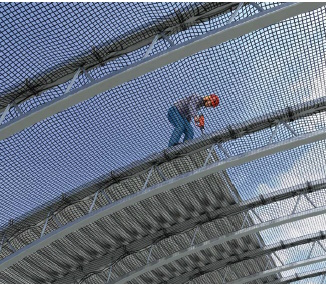
Abb. 17
Schutznetze (Sicherheitsnetze) sind Netze, die abstürzende Personen auffangen.
Die Netze müssen der DIN EN 1263-1 entsprechen.
Schutznetze (Sicherheitsnetze) vom System S werden z. B. im Hallenbau eingesetzt.
Schutznetze (Sicherheitsnetze) sind nach der Errichtung durch eine zur Prüfung befähigte Person zu prüfen.
Die Nutzerin bzw. der Nutzer sollen vor dem Gebrauch durch Inaugenscheinnahme und Kontrolle den sicheren Zustand des Schutznetzes feststellen.
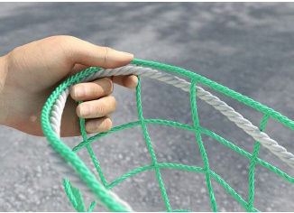
Abb. 18
Das Randseil ist ein Seil, dessen Bruchkraft mindestens 30,0 kN beträgt, jede einzelne Masche des Netzrandes aufnimmt und das die äußeren Abmessungen des Schutznetzes bestimmt.
Das Randseil muss durch jede einzelne Masche des Netzrandes gezogen werden, ob es mit dem Netz vernäht ist oder nicht. Die Verbindung beim Schließen eines Randseiles muss gegen unbeabsichtigtes Lösen gesichert sein. Dieses kann z. B. durch einen Spleiß erfolgen.
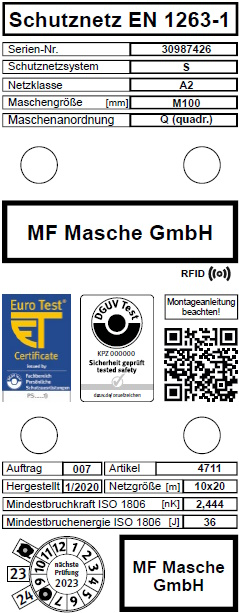
Abb. 19
| Hersteller: | Firmenlogo |
| 30987426 | Seriennummer |
| DIN EN 1263-1: | Schutznetz (Sicherheitsnetz) entspricht der Norm |
| S | Schutznetzsystem gemäß Norm |
| A 2 | Netzklasse gemäß Norm Maschenanordnung parallel zum Netzrand |
| M100 | Maschenweite 100 mm |
| 10 x 20 | Netzgröße 10 m x 20 m |
| Artikel Nr.: | Artikelnummer des Herstellers |
| 1/2020 | Herstellungsdatum |
| 36J | Mindest-Energieaufnahmevermögen der Prüfmasche |
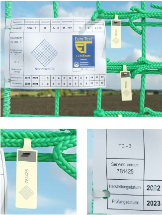
Abb. 20
Kennzeichnung am Schutznetz (Sicherheitsnetz)
Seriennummer Netz und Prüfplaketten müssen gleich sein.
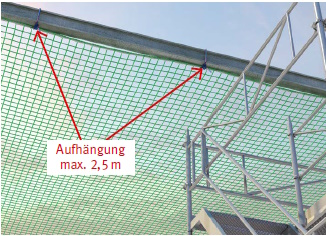
Abb. 21
Abstand Aufhängepunkte
Der Abstand zwischen den Aufhängepunkten darf nicht mehr als 2,5 m betragen.
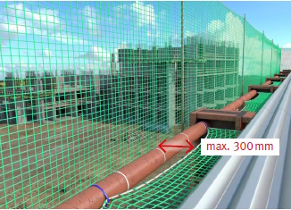
Abb. 22
Abstand zwischen Netz und Absturzkante
Der horizontale Abstand zwischen Netz und Absturzkante darf nicht größer als 300 mm sein.
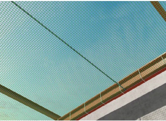
Abb. 23
Kopplungsseile
Werden Schutznetze (Sicherheitsnetze) miteinander verbunden, sind Kopplungsseile so zu verwenden, dass an der Naht keine Zwischenräume von mehr als 10 cm auftreten und die Schutznetze (Sicherheitsnetze) sich nicht mehr als 10 cm gegeneinander verschieben können.
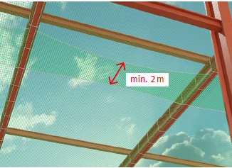
Abb. 24
überlappend ohne Kopplungsseil
Werden Schutznetze (Sicherheitsnetze) System S überlappend ohne Kopplungsseil verwendet, muss die Überlappung mindestens 2,0 m betragen.
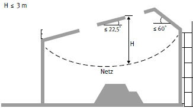
Abb. 25 Schutznetze (Sicherheitsnetze) sind möglichst dicht unterhalb der zu sichernden Arbeitsplätze einzubauen. Lassen sich aus arbeitstechnischen Gründen und baulichen Gegebenheiten Schutznetze (Sicherheitsnetze) nicht unmittelbar unter dem Arbeitsplatz montieren, sind Absturzhöhen entsprechend der Abbildung einzuhalten.
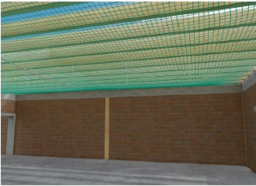
Abb. 26
Abweichend vom Regelfall sind Schutznetze (Sicherheitsnetze) bei einer Mindestfreiraumhöhe von mehr als 3,00 m einsetzbar, wenn
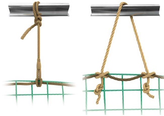
Abb. 27
Netze werden mit Aufhängeseilen befestigt.
links: einsträngiges Aufhängeseil (Seilbruchkraft ≥ 30 kN)
rechts: zweisträngiges Aufhängeseil (Seilbruchkraft ≥ 15 kN)
Für die Bemessung jedes Aufhängepunktes ist eine charakteristische Last P von mindestens 6 kN anzunehmen.
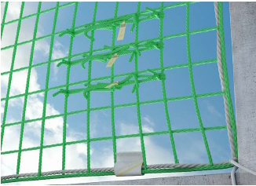
Abb. 28
Sollen ältere Schutznetze (Sicherheitsnetze) eingesetzt werden, ist nachzuweisen, dass das Mindest-Energieaufnahmevermögen der Prüfmasche den vom Hersteller angegebenen Wert nicht unterschreitet.
Hierzu ist dann ein Nachweis zu führen, indem eine Prüfmasche aus dem Schutznetz (Sicherheitsnetz) entnommen wird und durch eine geeignete Prüf- und Zertifizierungsstelle oder den Hersteller geprüft wird.
Die Prüfung des Mindest-Energieaufnahmevermögens der Prüfmasche hat nach DIN EN 1263-1 zu erfolgen und darf nicht länger als 12 Monate nach Herstellung des Schutznetzes (Sicherheitsnetzes) oder nach der letzten erfolgreichen Prüfung der Alterung zurückliegen.